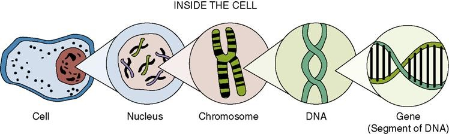

The molecular foundation of environmental DNA
Every environmental DNA (eDNA) study begins with a simple question: how can a few microscopic fragments of DNA in a sample reveal which organisms live in an ecosystem? The answer lies in understanding DNA itself.
Environmental DNA analysis is fundamentally an application of molecular biology. Before learning how DNA is collected, amplified, sequenced, and analysed, it is essential to understand what DNA is, how it is organised within cells, and why its sequence can be used to identify organisms.
Life as an information system
Every living organism, from bacteria to whales, must perform the same fundamental tasks. It must obtain energy, maintain its internal environment, respond to external conditions, reproduce, and pass hereditary information to the next generation. These processes require instructions which are stored in DNA (deoxyribonucleic acid).
Rather than viewing DNA simply as a chemical molecule, it is more helpful to think of it as the biological information storage system of life. Just as a computer stores information as binary code, living organisms store biological information as sequences of four nucleotide bases:
Adenine (A)
Thymine (T)
Cytosine (C)
Guanine (G)
The order of these bases forms a molecular language. Every cell interprets this language to manufacture proteins, regulate metabolism, and coordinate development.
Importantly, different species possess different DNA sequences. Although much of the genome is shared because all organisms perform similar cellular functions, enough sequence variation exists to distinguish one species from another.
This principle forms the foundation of environmental DNA analysis.

The cell: the basic unit of life
Cells are the smallest structural and functional units capable of independent life. Each cell contains specialised components known as organelles, each performing a particular function.
Examples include:
Nucleus: stores most genetic information
Mitochondria: produce ATP through cellular respiration
Ribosomes: synthesise proteins
Endoplasmic reticulum and Golgi apparatus: process and transport proteins;
Lysosomes and peroxisomes: recycle cellular materials.
Although cells differ greatly among organisms, almost every eukaryotic cell follows the same fundamental organisational plan.
The genetic information that controls cellular function is largely contained within the nucleus.
The genome
The complete genetic information of an organism is known as its genome.
The genome includes:
protein-coding genes;
RNA genes;
regulatory DNA;
repetitive DNA;
structural chromosome regions.
Only a small proportion of the genome directly encodes proteins. Much of the remaining DNA regulates gene activity, contributes to chromosome structure, or consists of repeated sequences whose functions are still being investigated.
Consequently, a genome should not be regarded simply as a collection of genes. Instead, it is the complete molecular instruction manual required to build and maintain an organism.
Chromosomes: organising the genome
Human DNA would measure approximately two metres if stretched into a straight line. Yet this enormous molecule must fit inside a nucleus only a few micrometres in diameter. This remarkable packaging is achieved through chromosomes.
DNA wraps around histone proteins to form chromatin. The chromatin fibre is folded repeatedly until individual chromosomes are produced. Chromosomes therefore serve two important purposes:
First, they compact DNA so it fits inside the nucleus.
Second, they organise genetic information so that DNA can be accurately copied and inherited during cell division.
Humans possess 46 chromosomes arranged as 23 pairs. Other species possess different chromosome numbers, but chromosome number itself does not indicate biological complexity.
Genes: functional units within DNA
Genes are specific regions of DNA that contain information required to produce functional molecules. Most genes encode proteins, although some produce functional RNA molecules that never become proteins. A gene therefore represents a functional unit rather than an independent molecule.
Genes occupy particular positions, known as loci, along chromosomes.
Between genes lie extensive non-coding regions that regulate when genes are switched on or off, influence chromosome organisation, and contribute to genome stability.
Modern molecular biology recognises that these non-coding regions are often just as important as protein-coding genes.
From DNA sequence to biological function
DNA does not directly perform most cellular functions.
Instead, genetic information flows through a sequence of molecular events known as the central dogma of molecular biology: DNA → RNA → Protein
DNA stores information.
RNA copies and transports that information.
Proteins perform most biological functions. Proteins act as enzymes, structural molecules, receptors, transport proteins and signalling molecules.
Ultimately, every observable biological characteristic arises because DNA sequences influence which proteins are produced and when they are expressed.
Why DNA differs between species
All vertebrates require proteins for respiration, muscle contraction and metabolism. Consequently, many genes are highly conserved through evolution. However, mutations accumulate gradually over millions of years. Some mutations alter DNA sequences without affecting survival. These neutral mutations accumulate independently within different evolutionary lineages. As species diverge, their DNA sequences gradually become increasingly distinct. Environmental DNA analysis exploits these accumulated differences.
Rather than examining an entire genome, researchers analyse short regions that are:
sufficiently conserved to allow universal amplification;
sufficiently variable to distinguish species.
These regions are known as genetic markers and form the foundation of DNA barcoding and metabarcoding.
Why we do not sequence entire genomes
At first glance, sequencing the complete genome of an organism might appear ideal. In environmental samples, however, this is neither practical nor necessary. Water, soil and sediment contain DNA from thousands of organisms simultaneously. Most environmental DNA is fragmented, damaged and present in extremely small quantities. Instead of sequencing billions of base pairs, researchers target short diagnostic regions that provide enough variation for species identification. This approach dramatically reduces sequencing costs while increasing detection sensitivity.
Connecting the concepts
The concepts introduced in this chapter form a biological hierarchy.
Living organisms are composed of cells that contain a nucleus, within which chromosomes organise the genome. Chromosomes consist of DNA molecules that contain genes which is the functional units of genetic information. Through gene expression, this information is used to produce RNA and proteins, which regulate cellular processes and ultimately determine the structure, function, and biological characteristics of an organism.
Environmental DNA analysis begins when fragments of this hierarchy enter the environment after cells are shed, damaged or die.
Key concepts
DNA is the universal hereditary material of almost all living organisms.
The genome represents all genetic information within an organism.
Chromosomes package and organise DNA.
Genes are functional regions of DNA.
DNA sequence differences allow species to be distinguished.
Environmental DNA analysis identifies organisms by analysing short diagnostic DNA sequences rather than whole genomes.

The relationship between genes, DNA and chromosomes